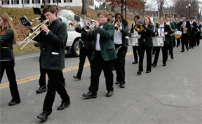

Music

The DCMB plays a wide variety of music, ranging from the occasional march to popular songs to movie and video game music and more. Some of our favorites include "Hey Baby", "Build me up Buttercup", "The Muppets Theme", "Pirates of the Caribbean", and "Time Warp".
In addition to these, in our weekly parade, and while marching on and off the field, and whenever the football team scores, we play the school fight songs, aka "Dartmouth Tunes" (DT's).
Here are a few more Dartmouth songs the band either plays or sings:
[There are recordings of the wind symphony playing these, and there are not-as-nice recordings on the old band site, so these pages should include those.]